Curso: Fusiones y Adquisiciones · Prof. Dr. Jonas Lucio Maia
LSEG WorkspaceDCF · Comparables · Precedentes
Guía LSEG
Mapa y ruta de trabajo
Etapas, outputs y rutas principales en LSEG Workspace.
Objetivo
De LSEG Workspace al rango de valor
Referencia integrada para la valuación de una empresa pública mediante DCF, múltiplos de comparables y transacciones precedentes. LSEG Workspace aporta datos financieros, estimaciones, tasas, riesgo, pares y transacciones; la trazabilidad conecta cada supuesto con su RIC, campo, pantalla y fecha de consulta.
Nota didáctica. Esta guía es el fork LSEG de la guía Bloomberg del curso. La secuencia analítica, las fórmulas y el estándar de documentación se mantienen; cambian las rutas, los identificadores y las herramientas de la plataforma.
0. Mapa general del proceso
Etapa
Qué obtenemos
Ruta principal en LSEG Workspace
1. Perfil
Negocio, control y estructura
Company Overview · Ownership · Company Tree · Officers & Directors
2. Históricos
Estados financieros y FCFF
Financials · Worldscope · Segments · Export to Excel
3. Macro
Inflación, PIB, FX y tasas
LTEO · ECOP · CBP · Charting · RateViews
4. WACC
Rf, ERP, beta, Kd y pesos
DIB · Screener · Debt & Credit · StarMine WACC
5. Proyecciones
Consenso y escenarios
Estimates (ESTD) · I/B/E/S · News · Events
6. DCF
EV, equity y valor por acción
Excel con datos LSEG · Financials Valuation · Intrinsic Valuation
Deal Screener · Company Deals · Deals Market Overview
9. Integración
Football field y precio de reserva
Excel · Price Target Builder como contraste
Ruta de trabajo: recolectar y documentar los datos antes de construir el modelo. Cada cifra debe conservar fecha de consulta, RIC, pantalla o campo y parámetros.
Guía LSEG
Primeros pasos en LSEG Workspace
Búsqueda global, RIC, Company View, DIB, Excel y disciplina de documentación.
1. Primeros pasos en LSEG Workspace
1.1 Acceso y lógica de navegación
Workspace Web funciona desde el navegador con la cuenta institucional y concentra búsqueda, aplicaciones, datos y analítica en una misma interfaz.
La barra de búsqueda global es el punto de entrada para empresas, instrumentos, aplicaciones y pantallas.
El RIC funciona como identificador operativo de instrumentos en LSEG. En las capturas, WALMEX.MX funciona como activo ilustrativo; su Company View concentra las distintas áreas de información corporativa, financiera y de mercado.
La disponibilidad de aplicaciones, campos y exportaciones depende del perfil de licencia.
1.2 Búsqueda, DIB y Excel
Desde la página de la empresa se accede a Overview, News, Financials, Estimates, Debt, Events, Peers y Valuation.
El Data Item Browser (DIB) permite localizar campos y revisar su definición, periodicidad, unidad y cobertura.
En Excel, la función =TR() recupera datos identificados por RIC y campo. Ejemplo: =TR("WALMEX.MX","TR.BetaFiveYear").
DIB muestra la definición económica, periodicidad, unidad, moneda, parámetros y cobertura de cada campo; por ello es la referencia para distinguir conceptos con nombres similares.
1.3 Disciplina de documentación
La trazabilidad de un dato queda definida por fecha de consulta, RIC, campo o pantalla, moneda, unidad, período fiscal y parámetros.
La exportación a Excel conserva las columnas seleccionadas para el modelo. Las cifras Worldscope estandarizadas y las cifras reportadas por la compañía pueden diferir por clasificación, ajustes y moneda, por lo que su reconciliación forma parte del análisis.
La disponibilidad depende de la licencia. DIB y la búsqueda global permiten identificar campos o aplicaciones equivalentes cuando una vista específica no está habilitada.
Guía LSEG
Empresa, históricos y FCFF
Negocio, propiedad, gobierno corporativo, estados financieros y normalización.
2. Paso 1: Perfil de la empresa objetivo
2.1 Negocio, propiedad y gobierno
El perfil corporativo delimita la entidad económica que se valora: negocio, perímetro de consolidación, control, accionistas, gobierno y eventos que pueden alterar flujos o riesgo. WALMEX funciona como caso ilustrativo a lo largo de las capturas.
Company Overview: descripción, industria, país, cotización y métricas principales.
Ownership: accionistas, control y free float.
Officers and Directors: equipo directivo y consejo.
Takeover Defenses: mecanismos que pueden afectar una operación de control.
Company Tree: matriz, subsidiarias y participaciones. Es esencial definir el target level.
Corporate Events y News: resultados, guidance, adquisiciones, litigios y otros anuncios relevantes.
Ruta: Company › OverviewCompany OverviewFicha corporativa y acceso a las principales vistas de la empresa.
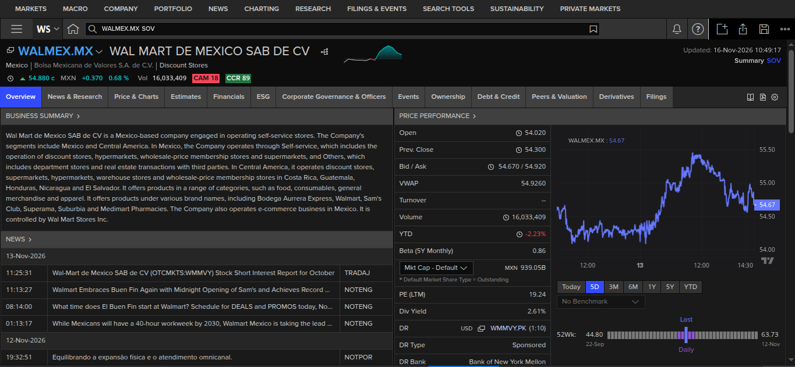
Ruta: Company › OwnershipCompany OwnershipEstructura de propiedad, accionistas y free float.
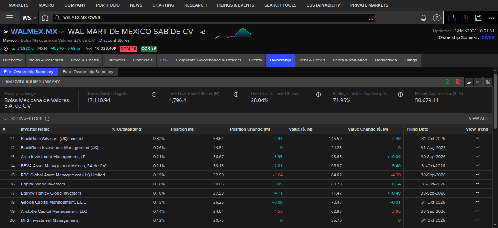
Ruta: Company › Corporate Governance › Officers and DirectorsCorporate Governance – Officers and DirectorsDirectivos y miembros del consejo.
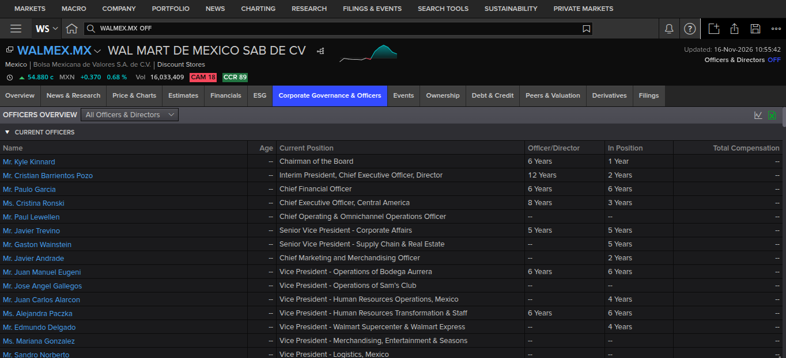
Ruta: Company › Corporate Governance › Takeover DefensesCorporate Governance – Takeover DefensesMecanismos de defensa frente a cambios de control.
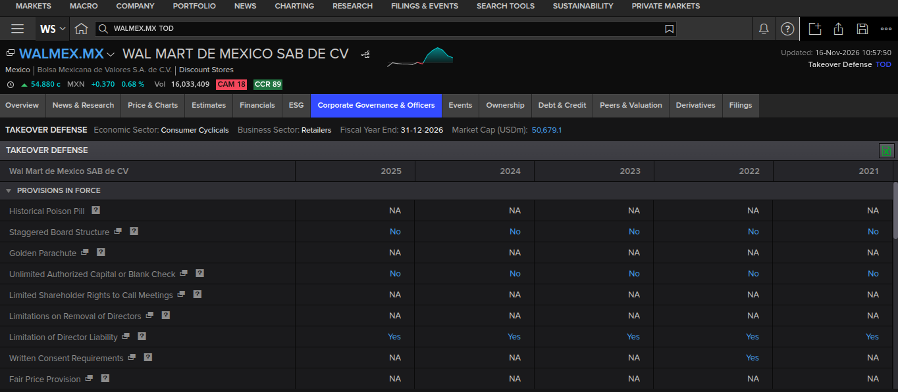
Ruta: Company › Company TreeCompany TreeMatriz, subsidiarias y relaciones corporativas.
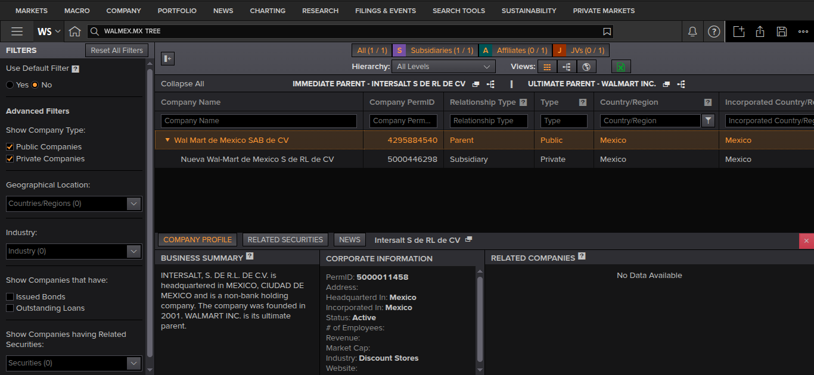
Ruta: Company › Corporate EventsCorporate EventsCalendario y eventos corporativos relevantes.
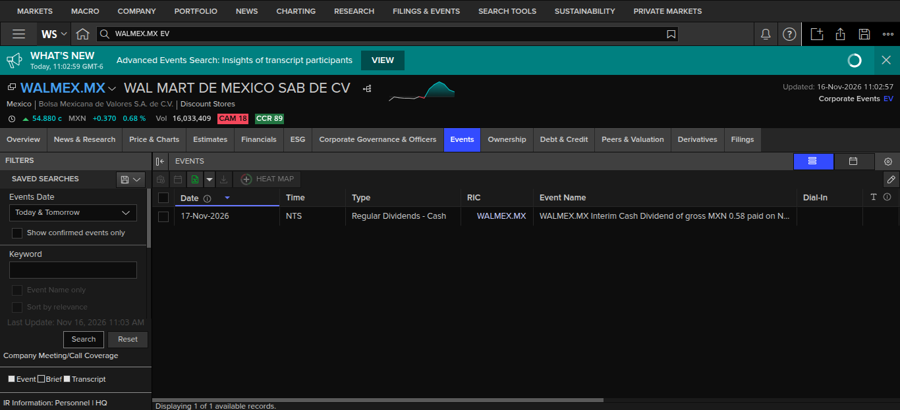
Ruta: Company › NewsCompany NewsNoticias vinculadas con la empresa.
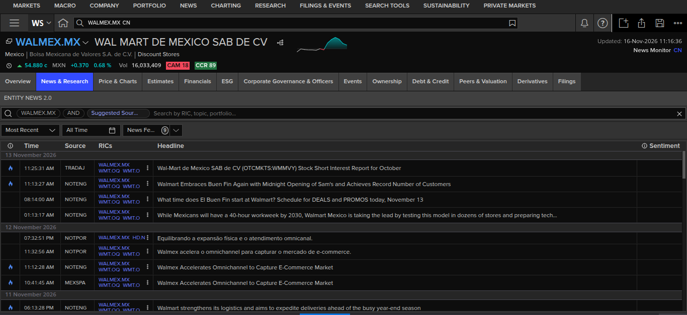
3. Paso 2: Estados financieros históricos
3.1 Financials y Worldscope
Financials integra Financial Summary, Income Statement, Balance Sheet, Cash Flow y Segments en vistas configurables por base, período, estandarización, moneda y escala.
Una serie anual de 5 a 10 ejercicios permite observar ciclo, márgenes y reinversión; la frecuencia trimestral añade valor cuando la estacionalidad o un cambio reciente es material.
La exportación conserva moneda, escala y base fiscal, elementos decisivos para evitar inconsistencias entre estados, consenso y modelo.
Recupere ventas, EBITDA, EBIT, D&A, CAPEX, capital de trabajo operativo, deuda, caja, minoritarios, asociadas y tasa efectiva de impuestos.
Ruta: Company › Financials › Financial SummaryFinancial SummaryResumen de desempeño histórico y métricas financieras.
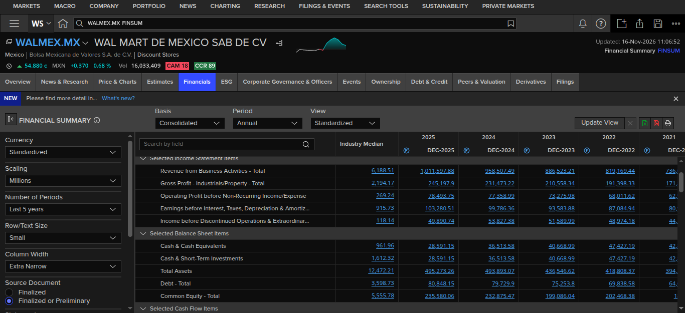
Ruta: Company › Financials › Income StatementIncome StatementEstado de resultados estandarizado.
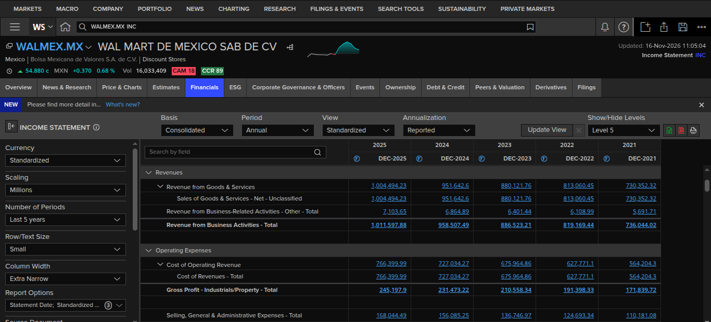
Ruta: Company › Financials › Balance SheetBalance SheetBalance general estandarizado.
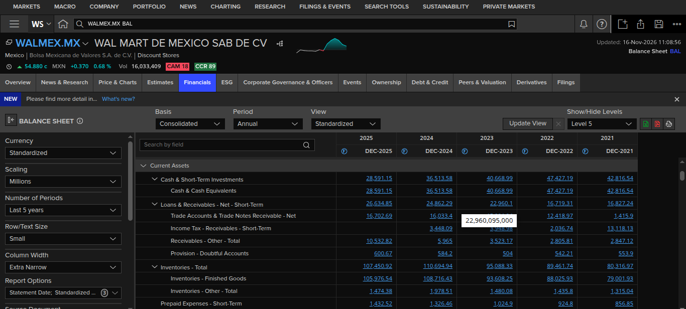
Ruta: Company › Financials › Cash FlowCash FlowEstado de flujo de efectivo y partidas de inversión.
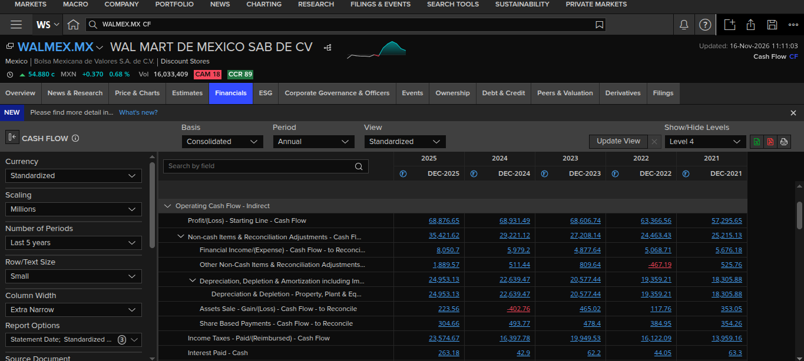
Ruta: Company › Financials › Export to ExcelExport to ExcelEl panel de exportación permite seleccionar estados financieros, Valuation y otras vistas antes de generar el archivo de Excel.
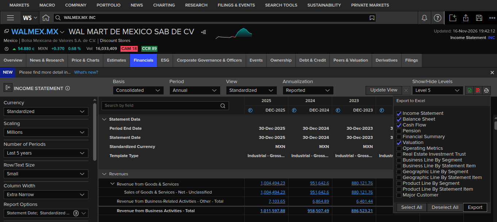
Ruta: Company › Financials › SegmentsSegmentsInformación financiera por segmento.
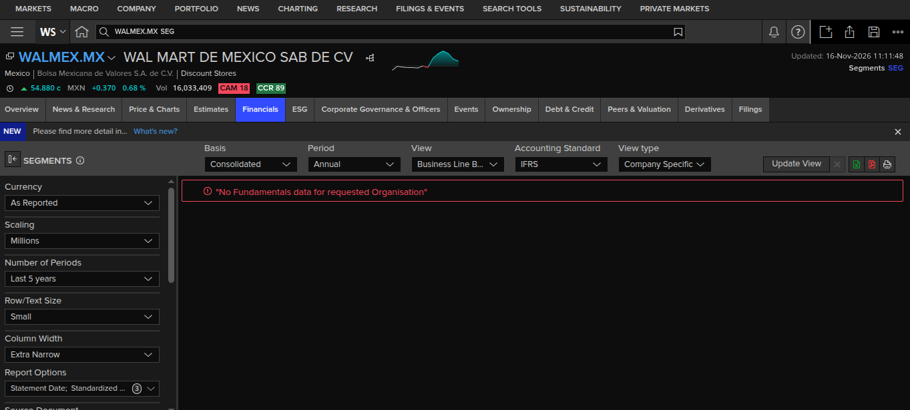
3.2 Cálculo histórico del FCFF
FCFF = EBIT × (1 − T) + D&A − CAPEX − ΔNOWC
El FCFF histórico representa la conversión del resultado operativo en caja disponible para los proveedores de capital. Una serie de 3 a 5 años permite observar recurrencia, volatilidad del capital de trabajo y efecto de partidas no recurrentes. La guía utiliza FCFF, equivalente al UFCF del documento técnico.
Guía LSEG
Supuestos macro
Inflación, crecimiento, tasas, moneda y consistencia nominal.
4. Paso 3: Supuestos macro
4.1 Inflación y expectativas
Long-Term Economic Outlook (LTEO): concentra escenarios macroeconómicos de horizonte extendido para crecimiento, inflación, tasas y otras variables por país. Es especialmente útil para fundamentar el estado estable del DCF y distinguir el consenso de corto plazo de una referencia estructural.
Economic Indicator Polls (ECOP): reúne Reuters Polls por indicador, país y fecha de pronóstico, mostrando consenso y distribución de estimaciones. Permite observar nivel esperado, revisión y dispersión para inflación, PIB y otras variables macroeconómicas.
Central Bank Polls (CBP): organiza expectativas de política monetaria, decisiones de tasa y horizonte de largo plazo. Su interés para valoración reside en la conexión entre inflación, tasa nominal, curva soberana y costo de capital.
Inflación implícita: el diferencial entre bonos nominales e indexados de vencimientos comparables aproxima el breakeven inflation incorporado por el mercado. Incluye primas de liquidez, inflación y riesgo, por lo que no equivale mecánicamente a un pronóstico realizado.
Charting / Compare: superpone series, instrumentos o pronósticos en una misma ventana y permite cambiar frecuencia y horizonte. Facilita contrastar inflación observada, expectativas de encuestas, breakevens y tasas nominales.
Ruta: Macro › Long-Term Economic Outlook · LTEOLong-Term Economic OutlookExpectativas macroeconómicas de largo plazo.
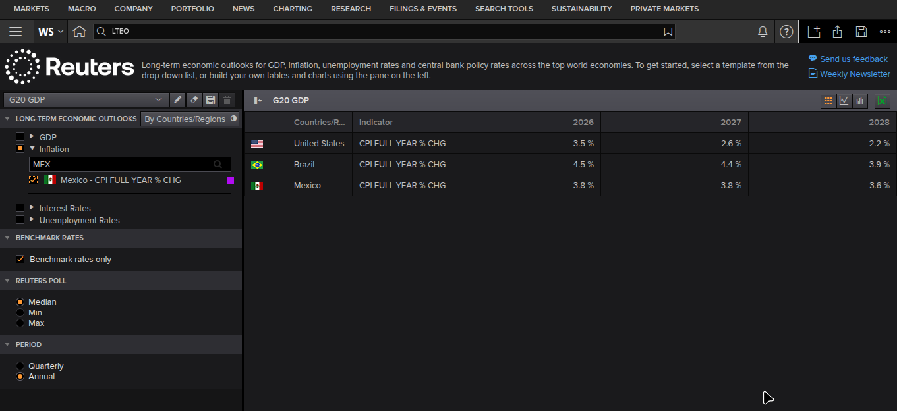
Ruta: Macro › Economic Indicator Polls · ECOPEconomic Indicator PollsConsenso de Reuters Polls por indicador.
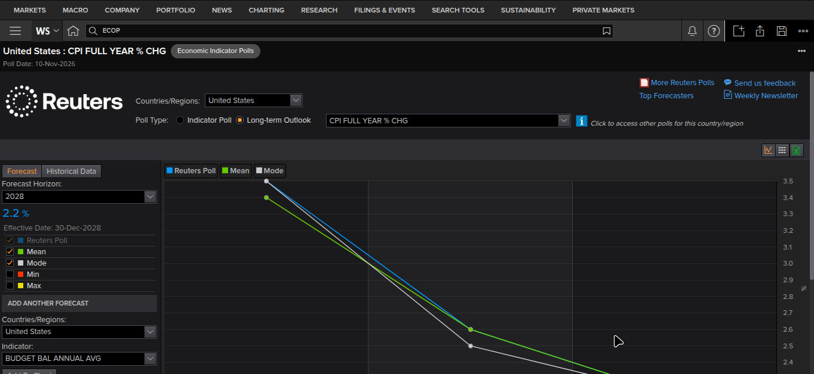
Ruta: Macro › Central Bank Polls · CBPCentral Bank Polls – Long-Term OutlookExpectativas de bancos centrales y política monetaria.
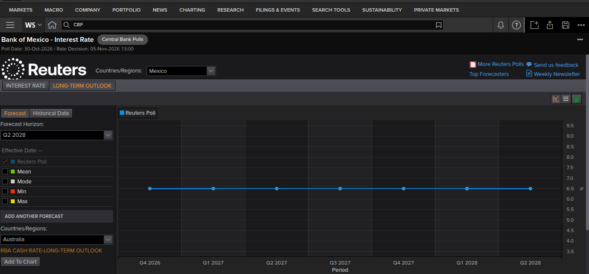
Ruta: Search › bonos nominales e indexadosInflación implícita – selección de instrumentosInstrumentos nominales e indexados usados para la comparación.
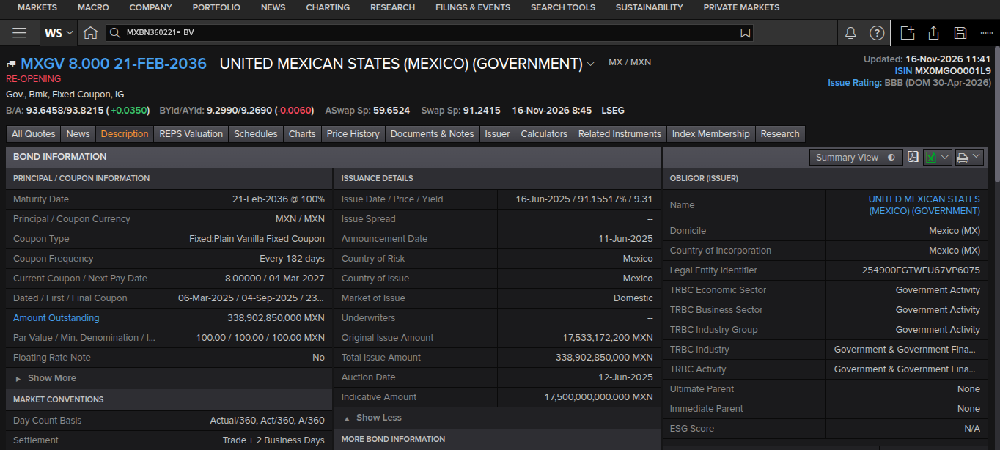
Ruta: Charting › CompareDiferencial implícito de inflaciónBreakeven aproximado entre instrumentos comparables.
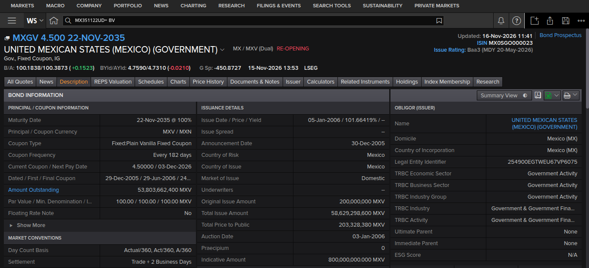
Ruta: Charting › Chart › CompareCharting, Chart, CompareComparación gráfica de series macroeconómicas.
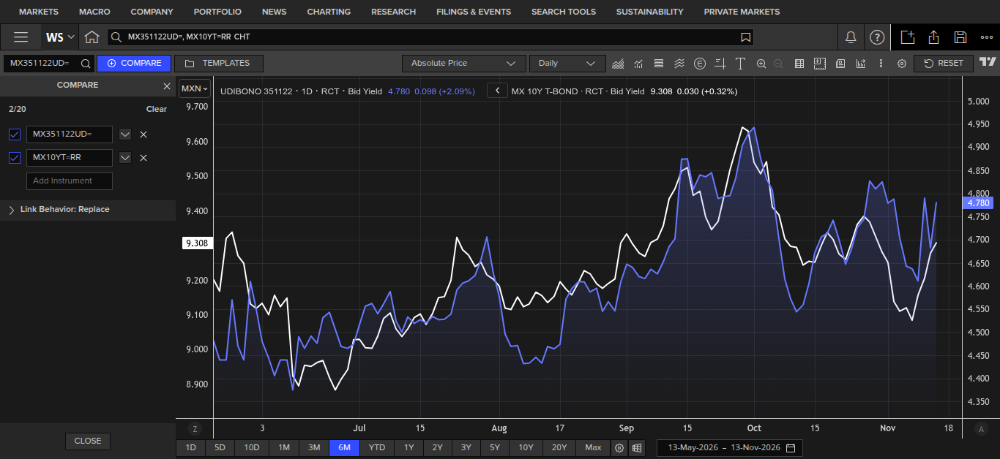
4.2 Crecimiento de largo plazo
g nominal de largo plazo ≈ inflación esperada de largo plazo + crecimiento real sostenible
Los pronósticos de PIB real ofrecen una referencia macroeconómica para el crecimiento de largo plazo, pero no representan automáticamente la tasa de crecimiento de una empresa. La tasa terminal refleja también moneda, inflación, madurez, posición competitiva y reinversión.
Ruta: Macro › GDP ForecastsMéxico – GDP ForecastsPronósticos de crecimiento real para México.
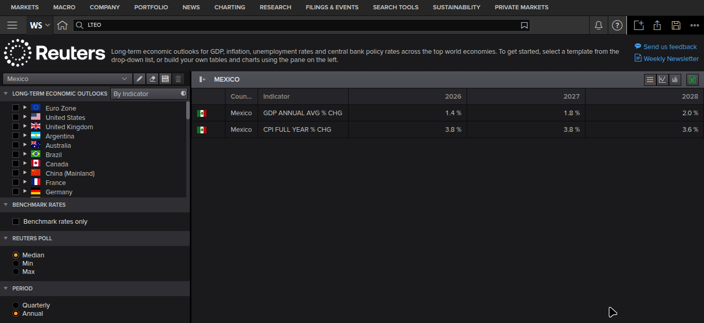
4.3 Moneda y consistencia
Los flujos nominales en MXN corresponden a una tasa nominal en MXN. Una valuación en USD requiere conversión consistente mediante tipo de cambio explícito, paridad o forwards; combinar flujos en MXN con un WACC real o en USD produce una inconsistencia de moneda e inflación.
Depreciación esperada ≈ inflación local − inflación de la moneda base
Guía LSEG
WACC
Rf, ERP, beta, costo de equity, costo de deuda y pesos.
5. Paso 4: WACC, componente por componente
WACC = [E/(D+E)] × kₑ + [D/(D+E)] × k𝒹 × (1 − T)
5.1 Tasa libre de riesgo
Los RIC US10YT=RR y MX10YT=RR representan referencias soberanas a 10 años para Estados Unidos y México.
Quote y Description muestran el rendimiento y las características del instrumento; Government Bond Prices, RateViews y Curves sitúan ese punto dentro de la estructura temporal de tasas.
El benchmark a 10 años es una convención frecuente por liquidez y horizonte, mientras que la curva completa permite evaluar su relación con la duración económica de los flujos.
Ruta: Search: US10YT=RR › Quote / DescriptionUS 10Y – Quote / DescriptionBenchmark soberano de Estados Unidos.
Ruta: Markets › Fixed Income › Government Bond Prices › Mexico › RateViewsGovernment Bond Prices – Mexico – RateViewsVista de rendimientos gubernamentales de México.
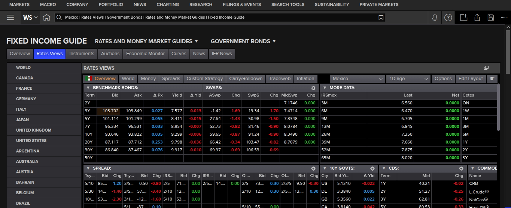
Ruta: Markets › Fixed Income › Government Bond Prices › Mexico › CurvesGovernment Bond Prices – Mexico – CurvesCurva soberana por vencimiento.
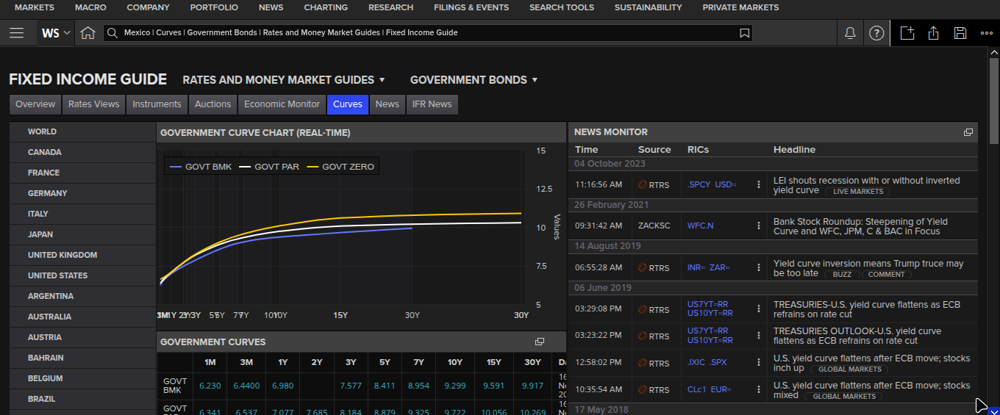
5.2 Equity risk premium y riesgo país
StarMine Equity Risk Premium presenta una estimación de prima de riesgo de equity por mercado; DIB muestra el campo correspondiente, su definición, fecha y parámetros.
Para una compañía específica, ubique el campo o la analítica de ERP dentro de Company Analytics / Credit.
Como contraste de riesgo soberano, puede revisar el CDS de México, por ejemplo el instrumento de 10 años disponible en la plataforma.
ERP, Rf y moneda deben pertenecer al mismo marco. No duplique el riesgo país en ERP, costo de deuda y flujos.
Ruta: StarMine › Equity Risk Premium › MexicoStarMine Equity Risk Premium – MexicoPrima de riesgo de equity estimada para México.
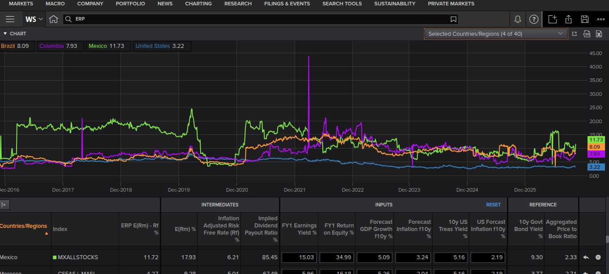
Ruta: WALMEX.MX › DIB › Equity Risk PremiumWALMEX – DIB – Equity Risk PremiumLocalización del campo y su definición en DIB.
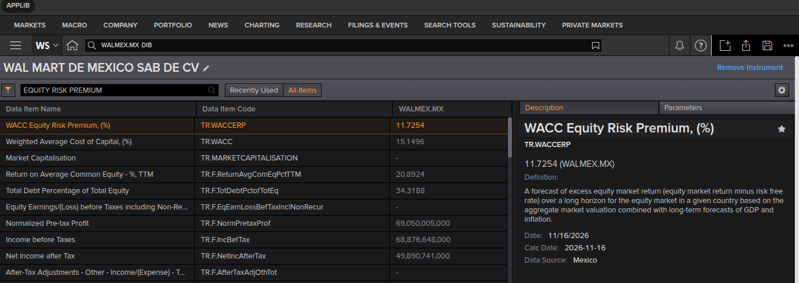
Ruta: Country: Mexico › Financial Markets › CDSMexico – Financial Markets and CDSCountry financial-markets view used to contextualize sovereign risk.
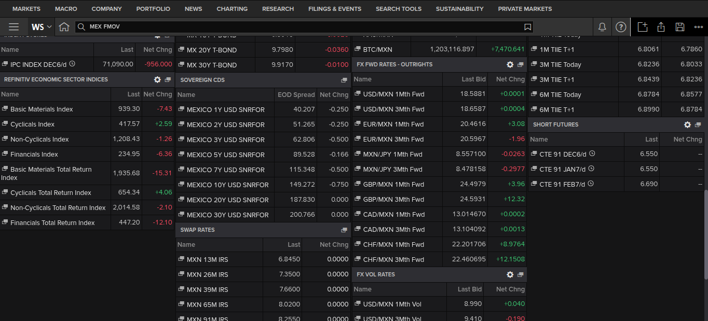
Ruta: Search: MXGV10YUSAC=RMexico 10Y CDSTen-year sovereign CDS instrument and spread reference.
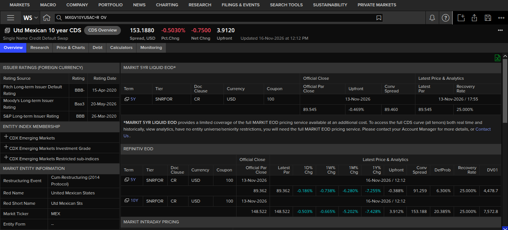
5.3 Beta apalancada
WACC de la compañía: desde Activo ilustrativo, la vista WACC presenta el costo de capital calculado por LSEG y sus componentes. Es una referencia directa del activo y permite observar la metodología integrada de la plataforma.
Beta reportada: Price Performance o el campo TR.BetaFiveYear proporcionan la beta histórica de cinco años; DIB explica definición, frecuencia y parámetros.
Beta sectorial: Screener permite formar un universo por TRBC y región y añadir 5 Year Beta y Net Debt to Total Capital. La mediana de las betas desapalancadas reduce la influencia de observaciones extremas y separa riesgo operativo de estructura financiera.
Desapalancamiento de la beta observada:
βᵤ = βₗ / [1 + (1 − T) × (D/E)]
Reapalancamiento con la estructura objetivo:
βₗ = βᵤ × [1 + (1 − T) × (D/E)]
Las dos expresiones representan etapas distintas del procedimiento: la primera elimina el efecto del apalancamiento de cada comparable; la segunda incorpora la estructura de capital pertinente para la empresa valorada. El ajuste de Blume, cuando está disponible, aproxima la beta hacia uno y constituye una convención adicional, no una tercera fuente de riesgo.
Ruta: WALMEX.MX › WACCWALMEX – WACCVista de costo de capital y componentes.
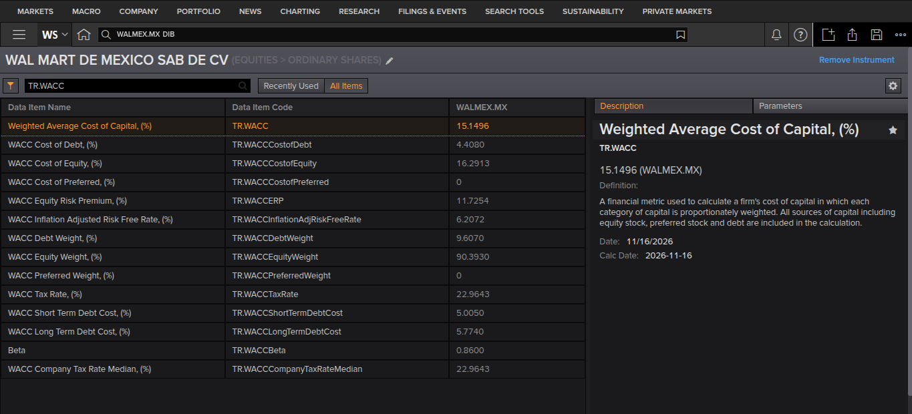
Ruta: WALMEX.MX › DIB › BetaWALMEX – DIB – BetaCampo de beta y definición en Data Item Browser.
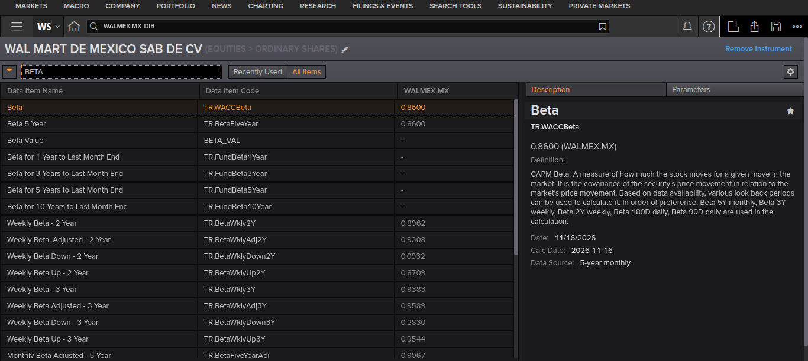
Ruta: Screener › TRBC/Region › Add Columns: 5 Year Beta, Net Debt to Total CapitalScreener – Beta y apalancamientoUniverso sectorial con filtros y columnas para beta sectorial.
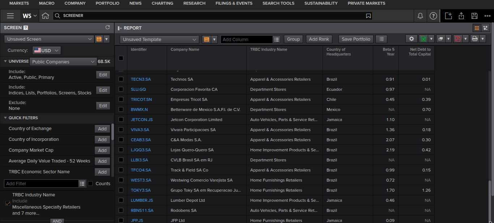
5.4 Costo de equity
kₑ = R𝒻 + βₗ × ERP (+ prima de país, si aplica)
La prima por tamaño es un ajuste adicional al CAPM y puede ser relevante en emisores pequeños o con acceso limitado a capital; su inclusión depende de la metodología y de la fuente utilizada.
E: capitalización bursátil, consistente con el valor de mercado del equity.
D: valor de mercado de la deuda cuando existe una referencia observable; el valor contable funciona como aproximación cuando la deuda no cotiza o su precio no es representativo.
TR.WACC y Company Analytics ofrecen un benchmark independiente construido por LSEG.
La comparación entre el WACC propio y el de LSEG sirve para explicar diferencias de fecha, moneda, beta, ERP, costo de deuda, impuestos y ponderaciones. La divergencia es información analítica y no implica que los supuestos deban converger.
Ruta: WALMEX.MX › StarMine › Company AnalyticsStarMine Company Analytics – ValuationEntry point for relative and intrinsic valuation analytics.
Consenso I/B/E/S, modelo explícito, valor terminal y equity bridge.
6. Paso 5: Proyecciones de flujos de efectivo
6.1 Consenso I/B/E/S
Estimates, disponible también mediante ESTD, concentra el consenso I/B/E/S de la empresa en vistas de estados, detalle por analista, recomendaciones, precio objetivo y sorpresas históricas.
Statement View: ventas, EBITDA, EBIT, utilidad y EPS esperados.
Detailed Estimates: estimaciones por analista, número de observaciones y dispersión.
Recommendations & Target Price: recomendación y precio objetivo de consenso.
Historical Surprise: historial de sorpresas para valorar la fiabilidad del consenso.
Ruta: WALMEX.MX › Estimates · ESTDWALMEX – Estimates (ESTD)Vista general del consenso I/B/E/S.
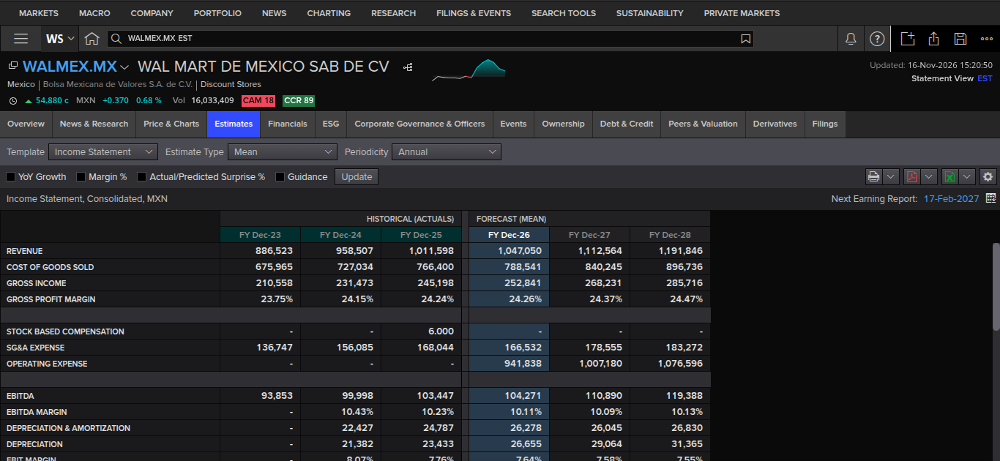
Ruta: WALMEX.MX › Estimates › Detailed EstimatesWALMEX – Detailed EstimatesEstimaciones por analista y dispersión.
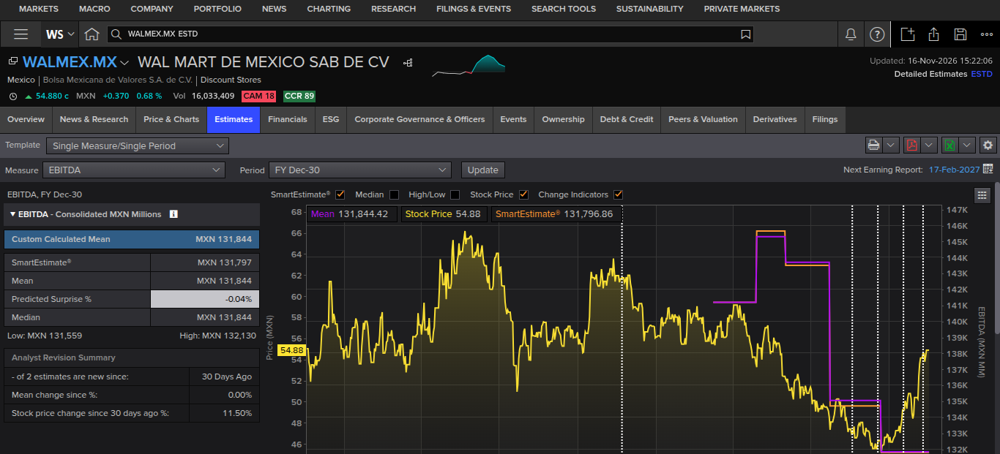
6.2 Construcción del caso base
El consenso funciona como ancla externa para ventas, márgenes y resultados, pero no sustituye la construcción económica del FCFF. Guidance, noticias y eventos permiten interpretar dispersión, revisiones y posibles rupturas respecto del historial.
6.3 Valor terminal
VTₙ = FCFFₙ × (1 + g) / (WACC − g)
VT = EBITDA final × múltiplo de salida
El método de crecimiento perpetuo vincula valor terminal con WACC y g; el múltiplo de salida lo vincula con precios observados en comparables. La participación del valor terminal en el EV revela cuánto depende el resultado de supuestos posteriores al período explícito.
7. Paso 6: Del valor presente al valor por acción
7.1 DCF y equity bridge
EV = Σ [FCFFₜ/(1+WACC)ᵗ] + [VTₙ/(1+WACC)ⁿ]
El equity bridge transforma enterprise value en valor atribuible a los accionistas mediante deuda neta, minoritarios, otras reclamaciones y activos no operativos. Las acciones diluidas convierten ese valor en una referencia por acción.
Valor por acción = Valor de equity / acciones diluidas
7.2 Sensibilidad
La sensibilidad WACC–g muestra cómo cambia el valor por acción ante combinaciones alternativas de costo de capital y crecimiento perpetuo. Un rango ilustrativo frecuente utiliza WACC ±1.0 pp en intervalos de 0.5 pp y g ±0.5 pp en intervalos de 0.25 pp. La condición matemática g < WACC evita un denominador nulo o negativo en el modelo de perpetuidad; los rangos económicos dependen de moneda, inflación, madurez y riesgo del negocio.
Guía LSEG
Comparables
Selección de pares, múltiplos, outliers e imputación de valor.
8. Paso 7: Valuación por múltiplos de comparables
8.1 Universo de pares
Screener forma universos de compañías cotizadas mediante filtros de TRBC, región, tamaño, liquidez y perfil operativo, y permite añadir columnas financieras, de mercado y valoración.
La lista de Peers de LSEG funciona como universo inicial; Edit Peers permite ajustar la muestra según modelo de negocio, geografía, escala, crecimiento, márgenes y riesgo.
El universo exportado reúne las variables que explican inclusión, exclusión, múltiplos y diferencias estructurales entre pares.
Ruta: Screener › Filters › Add ColumnsScreener – filtros y columnasConfiguración del universo de comparables.
EV/EBITDA, EV/EBIT, EV/Ventas, P/E y, cuando sea pertinente, P/B y P/FCFF.
La separación entre múltiplos trailing y forward distingue desempeño realizado de expectativas. Numerador y denominador corresponden a la misma base temporal y definición operativa.
El análisis incluye mediana, cuartiles y rango depurado; explique outliers por crecimiento, margen, riesgo, liquidez o ciclo.
EV objetivo = EBITDA de la empresa × múltiplo seleccionado
Guía LSEG
Transacciones precedentes
Deal Screener, primas, múltiplos y ajustes de comparabilidad.
9. Paso 8: Transacciones precedentes
9.1 Deal Screener
Deal Screener, accesible desde Search Tools › M&A o mediante DSCREENER, permite construir una muestra de transacciones con filtros de participación adquirida, industria, geografía, fecha, tamaño y estatus.
Los filtros permiten definir M&A, porcentaje adquirido, TRBC del target, geografía, fecha de anuncio, tamaño y estatus.
Las columnas pueden incorporar fecha, target, adquirente, deal value/EV, tipo de comprador, forma de pago, primas y métricas financieras disponibles.
La exportación reúne la muestra y sus columnas en Excel; el volumen disponible y los límites diarios dependen de la licencia. Los filtros visibles en Deal Screener definen la población de transacciones analizada.
Ruta: Deal Screener › Report › Add ColumnsDeal Screener – Report and Add ColumnsConfiguración del reporte y columnas de salida.
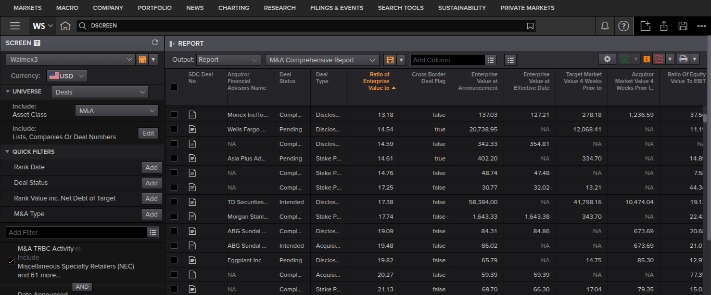
9.2 Múltiplos, primas y Company Deals
Cuando Deal Screener contiene información financiera del target, el deal value o enterprise value puede relacionarse con EBITDA y ventas correspondientes a la fecha del anuncio.
En targets públicos sin EBITDA utilizable, las primas sobre el precio no afectado de 1 día, 1 mes o 4 semanas ofrecen una referencia alternativa; mediana y cuartiles resumen la distribución sin depender de un único deal.
Company Deals reúne operaciones asociadas al activo en las que la compañía aparece como compradora, vendedora o target.
La comparabilidad de precedentes depende de antigüedad, ciclo, tamaño, geografía, tipo de comprador, participación adquirida y sinergias.
Guía LSEG
Herramientas adicionales de LSEG
Analíticas propietarias que fortalecen el contraste y el contexto de M&A.
10. Herramientas adicionales de LSEG
10.1 Financials – Valuation
Vista integrada de métricas de valuación dentro de Financials. Úsela para contrastar múltiplos y evolución histórica, sin sustituir la selección explícita del período y del denominador.
Ruta: WALMEX.MX › Financials › ValuationWALMEX – Financials – ValuationMétricas de valuación integradas en Financials.
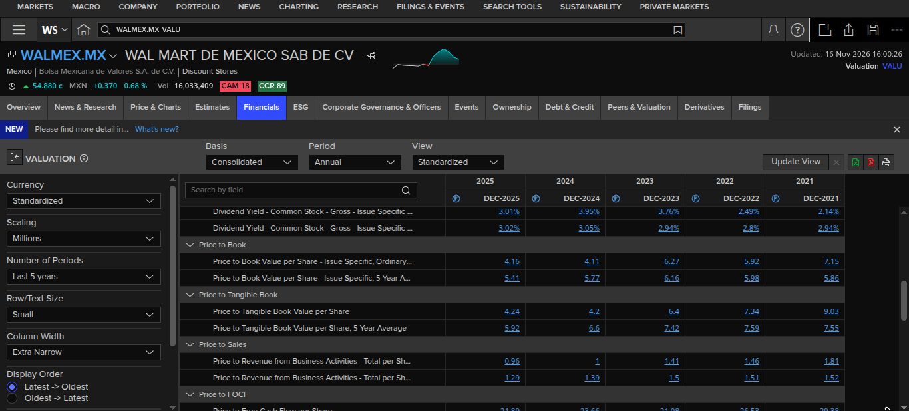
10.2 M&A Target Model
M&A Target Model estructura escenarios para una posible transacción, incluyendo precio, financiación y efectos de la operación. Funciona como una referencia adicional frente al modelo fundamental.
Ruta: WALMEX.MX › Events › M&A Target ModelEvents – M&A Target ModelHerramienta de análisis orientada a potenciales targets.
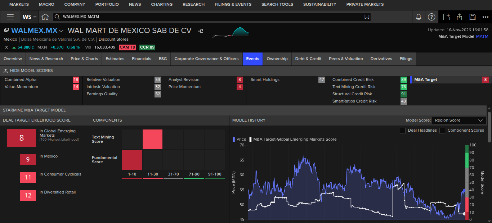
10.3 StarMine Relative Valuation
Analítica propietaria de valoración relativa. Úsela como benchmark, identificando variables, universo y fecha antes de comparar con los múltiplos construidos por el alumno.
Ruta: WALMEX.MX › Peers & Valuation › StarMine Relative ValuationStarMine Relative ValuationEstimación relativa de valoración y sus componentes.
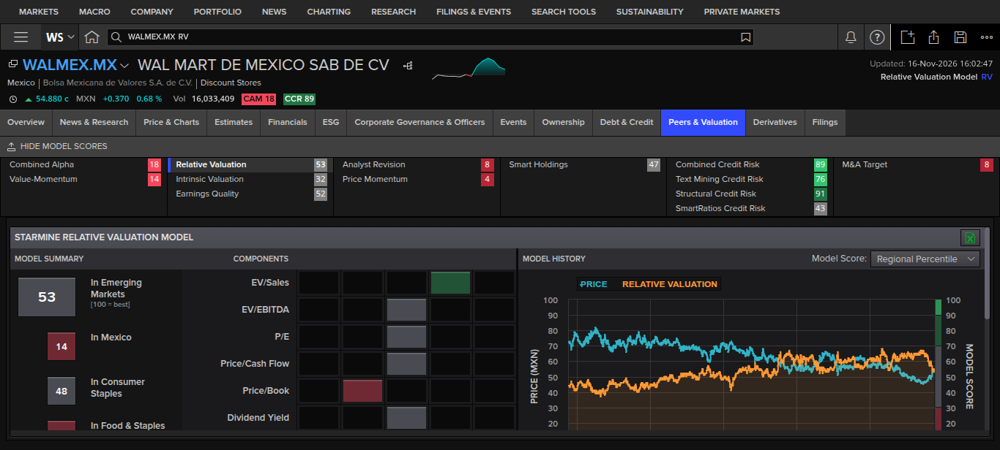
10.4 Intrinsic Valuation
Intrinsic Valuation presenta una estimación propietaria de valor intrínseco y sus principales impulsores. Ofrece un benchmark independiente frente al DCF fundamental y sus sensibilidades.
Ruta: WALMEX.MX › Peers & Valuation › Intrinsic ValuationIntrinsic ValuationVista de valoración intrínseca de la compañía.
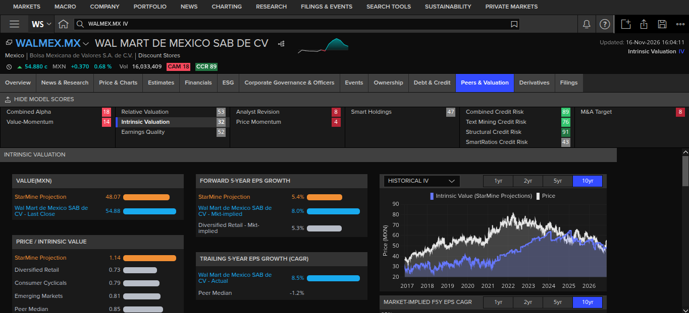
10.5 Price Target Builder
Price Target Builder combina escenarios y métodos de valoración para estructurar un precio objetivo. Su resultado funciona como contraste adicional frente al rango del football field.
Ruta: WALMEX.MX › Peers & Valuation › Price Target BuilderPrice Target BuilderConstrucción y contraste de precios objetivo.
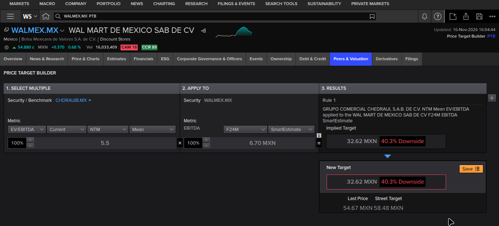
10.6 Deals Market Overview
DEALSMOV ofrece contexto agregado de actividad, sectores, geografías y tendencias de M&A. Es especialmente útil para interpretar si los precedentes pertenecen a un mercado expansivo, contractivo o distorsionado por un ciclo excepcional.
Ruta: Search: DEALSMOV › Deals Market OverviewDEALSMOV – Deals Market OverviewPanorama agregado del mercado de transacciones.
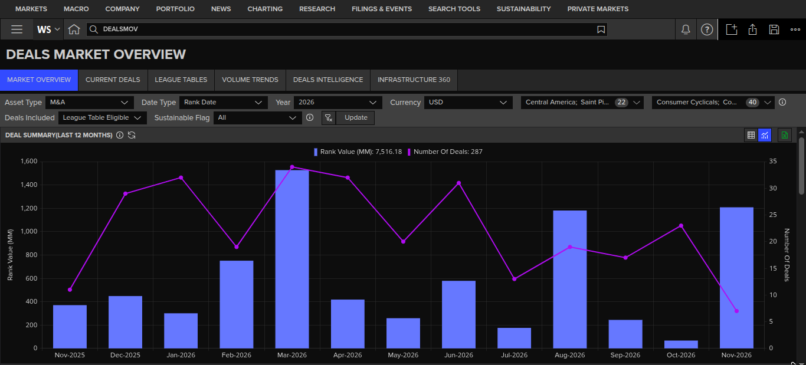
Ruta: DEALSMOV › Deals IntelligenceDeals Intelligence – Market OverviewAnalítica adicional de actividad y tendencias de deals.
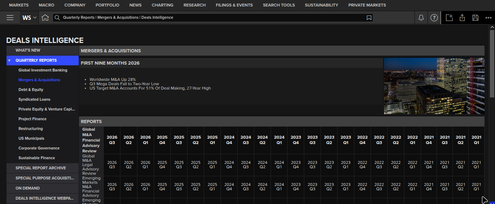
Guía LSEG
Cheat sheet y controles
Referencia rápida de rutas, campos y disciplina metodológica.
Apéndice A: rutas y campos útiles
Dato
Ruta o campo
Uso
Benchmark 10 años
US10YT=RR / MX10YT=RR
Rf
WACC StarMine
TR.WACC
DIB / Excel =TR()
Beta 5 años
TR.BetaFiveYear
Price Performance / DIB / Excel
Nombre
TR.CompanyName
DIB
Precio de cierre
TR.CLOSEPRICE
DIB / Excel
Consenso
Estimates / ESTD
I/B/E/S
Rendimiento de bonos
TR.FiOriginalYieldMaturity
Debt / DIB
Deals
DSCREENER; campos TR.MnA*
Deal Screener
Catálogo de datos
DIB
Definición y disponibilidad
Apéndice B: controles metodológicos
Flujos, g, Rf, ERP y WACC pertenecen al mismo marco nominal, real y monetario.
El riesgo país y los arrendamientos pueden aparecer en más de un componente; la consistencia evita contabilizarlos dos veces.
Definiciones de campos, períodos fiscales, unidades, monedas y fecha de extracción conforman la trazabilidad del modelo.
La disponibilidad exacta depende de la licencia y de las actualizaciones de LSEG Workspace; DIB contiene la definición vigente de cada campo.
Las analíticas StarMine funcionan como referencias independientes de contraste frente a un modelo transparente y reproducible.